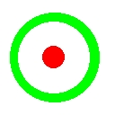

atlcIn order to test the accuracy of atlc, some simple geometries were devised, for which there are known exact closed-form analytical solutions. The following have been tested. To date, all tests have yielded acceptable accuracy. Out of 48 tests, the higest error measured is 3.05%, with However, note that in most cases where the error is over 1%, is is clearly very obvious why it is. The conclusions at the end explain the reason for the higher errors observered on some simulations.
An obvious structure to test atlc with two conductor and a single dielectric is the round coaxial cable, which has an impedance:
Zo=59.95849160*loge(D/d)/sqrt(Er) Ohms
where D is the inner diameter of the outer conductor and d is the outer diameter of the inner conductor. (The number 59.958491602 is usually seen as 60 in most books, but that is only an approximation).
Circular conductors can never be defined exactly using a square grid, so differences between the exact answer and atlc's answer are due to:
atlc uses. atlc.
| Filename | D | d | Er | Zo (theory) | Zo (atlc) |
Error (%) | |
| coax-500-200-Er=100.bmp | 500 | 200 | 100.0 | 5.494 | 5.492 | -0.036 % | 0m:43s |
| coax-500-400.bmp | 500 | 400 | 1.0 | 13.379 | 13.381 | + 0.020 % | 0m:11s |
| coax-500-200.bmp | 500 | 200 | 1.0 | 54.939 | 54.919 | -0.036 % | 0m:43s |
| coax-400-82.bmp | 400 | 82 | 1.0 | 95.019 | 95.023 | +0.004 % | 0m:31s |
| coax-500-100.bmp | 500 | 100 | 1.0 | 96.499 | 96.448 | -0.053 % | 1m:08s |
| coax-500-50.bmp | 500 | 50 | 1.0 | 138.060 | 137.944 | -0.008 % | 1m:22s |
| coax-500-25.bmp | 500 | 25 | 1.0 | 179.620 | 180.022 | +0.244 % | 1m:28s |
-O2 -g.% coax 32 120 2.2

According to the book Microwave and Optical Components, Volume 1, - Microwave Passive and Antenna Components, page 7, there is an exact formula for the impedance of a coaxial line (see below). If O is the offset between the centres of the two conductors, then the impedance Zo assuming Er=1, is given by the following equation.
60 loge(x+sqrt(x^2-1)) where x=(d2+D2-4 O2)/(2*D*d)
This will allow a second check of atlc's accuracy with two conductors and one dielectric. Any problems which might be masked by the symmetry of the stardard coaxial cable will be eliminated.
Whenever the number 60 appears in formula for transmission lines, it should in fact be replaced by the number 59.9585. 60 is just a good approximation, but since we are testing atlc, the following formula will be used:
59.9585 loge(x+sqrt(x^2-1)) /sqrt(Er) where x=(d2+D2-4 O2)/(2*D*d)
Of course, one could constuct the a number of such transmission lines with a graphics package using its ability to draw circles, but getting the correct diamters and offsets would be time confusming. For this reasons the program create_bmp_for_circ_in_circ was used to generate a number of bitamps quickly with the following diameters and offsets.
| Filename | D | d | O | Er | Zo (theory) | Zo (atlc) |
Error (%) |
| eccentric-a.bmp | 500 | 400 | 40 | 2.15 | 5.482 | 5.487 | +0.091 % |
| eccentric-b.bmp | 400 | 320 | 0 | 1.0 | 13.379 | 13.389 | +0.075 % |
| eccentric-c.bmp | 500 | 100 | 100 | 10.0 | 29.707 | 29.713 | +0.020 % |
| eccentric-d.bmp | 500 | 200 | 100 | 1.0 | 41.560 | 41.587 | +0.065 % |
| eccentric-e.bmp | 500 | 200 | 10 | 1.0 | 54.825 | 54.862 | +0.067 % |
| eccentric-f.bmp | 400 | 160 | 0 | 1.0 | 54.939 | 54.976 | +0.067 % |
| eccentric-g.bmp | 400 | 40 | 12 | 5.0 | 61.644 | 61.676 | +0.052 % |
| eccentric-h.bmp | 400 | 40 | 160 | 1.0 | 73.489 | 73.330 | -0.216% |
| eccentric-i.bmp | 1600 | 160 | 640 | 1.0 | 73.489 | 73.330 | -0.216 % |
| eccentric-j.bmp | 500 | 100 | 50 | 1.0 | 93.943 | 93.961 | +0.019 % |
| eccentric-k.bmp | 500 | 100 | 0 | 1.0 | 96.499 | 96.524 | +0.019 % |
| eccentric-l.bmp | 500 | 50 | 100 | 1.0 | 127.467 | 127.524 | +0.045 % |
| eccentric-m.bmp | 500 | 50 | 50 | 1.0 | 135.586 | 135.654 | +0.050 % |
| eccentric-n.bmp | 400 | 40 | 20 | 1.0 | 137.451 | 137.519 | +0.049 % |
create_bmp_for_circ_in_circ 500 400 40 2.2 eccentric-a.bmp && atlc -d caff00=2.15 eccentric-a.bmp
create_bmp_for_circ_in_circ 400 320 0 1 eccentric-b.bmp && atlc eccentric-b.bmp
create_bmp_for_circ_in_circ 500 100 100 10 eccentric-c.bmp && atlc -d caff00=10 eccentric-c.bmp
create_bmp_for_circ_in_circ -v 500 200 100 1 eccentric-d.bmp && atlc
create_bmp_for_circ_in_circ 500 200 10 1 eccentric-e.bmp && atlc
create_bmp_for_circ_in_circ 400 160 0 1 eccentric-f.bmp && atlc
create_bmp_for_circ_in_circ 400 40 12 5 eccentric-g.bmp && atlc -d caff00=5 eccentric-g.bmp
create_bmp_for_circ_in_circ 400 400 160 1 eccentric-h.bmp && atlc
etc.
-v option to create_bmp_for_circ_in_circ, it will print the exact theoretical values for you too.
-o offset option. For example:
coax -o 40 400 500 1 Zo = 8.038255 Ohms
atlc to come an approximate numerical answer, when you can compute an exact one in a small fraction of a second. However, using atlc to compute a few of these gives you confidence atlc is working properly.
This has an exact analytical solution, dependent on the ratio of the
width of the inner conductor w, to the distance between the two outer
conductors H. This assumes that the outer conductors extend to plus
and minus infinity and the inner conductor is infinitely thin. This
structure has the advantage of requiring no curves, so can be
represented accurately with the square grid used in atlc.
However, its impossible to have an inner conductor that is less than 1 pixel high and it is impossible to make the dimension W infinitely wide as it was take an infinite amount of disk space, RAM and CPU time. However, if the width W is made at least 4xH+w, then making it any larger does not seem to have much affect on the result.
The-i option to create_bmp_for_symmetrical_stripline,
forces the width
W to be equal to 4 times the internal height plus the inner conductor's
width w (unless the user specified a larger value of W). Hence, when
the -i option is used, a valid test of atlc's
accuracy can be made-i option, you can made the width W and height
H any value
you want above >=5 pixels, although H must be odd, for the inner conductor
to fit equally between the two outer confuctors. As always, the bitmaps created
are 10 pixels higher and 10 pixels wider, to enforce a green metallic boundary that is cleraly visable.
create_bmp_for_symmetrical_stripline -vv -i 0 201 290 50-201.bmp
For this to be a valid test of atlc, the width should be
infinite. Since you used the -i option (indicationg you
want the width W to effectively infinite, W must exceed w + 4xH.
Therefore W has been is set to 1134
w=290 H=201 w/H=1.442786 xo=23.7538
Zo is theoretically 49.989477 Ohms (assuming W is infinite)
This structure, which has a w/H value of 1.442786, has a theoretical impedance close to 50 Ohms (49.989477 to be precise). Version 4.6.0 of atlc calculates this to be 49.899 Ohms, an error of -0.181%, when using a grid 1134x201.
| Filename | W | H | w | w/H | Zoexact | Zoatlc | Error | Time |
| 25ohm-201h.bmp | 1512 | 201 | 668 | 3.3234 | 25.018 | 24.932 | -0.344 % | 0h:00m:46s |
| 25ohm-401h.bmp | 2978 | 401 | 1334 | 3.3267 | 24.996 | 24.940 | -0.224% | 0h:08m:52s |
| 25ohm-801h.bmp | 6000 | 801 | 2664 | 3.3267 | 25.001 | 24.935 | -0.264% | 1h:49m:46s |
| 50ohm-201h.bmp | 1134 | 201 | 290 | 1.42786 | 49.989 | 49.899 | -0.180% | 0h:00m:37s |
| 50ohm-401h.bmp | 2222 | 401 | 578 | 1.4419 | 50.026 | 49.944 | -0.164% | 0h:07m:16s |
| 50ohm-801h.bmp | 4399 | 801 | 1155 | 1.4419 | 50.012 | 49.878 | -0.268% | 1h:46m:31 |
| 100ohm-201h.bmp | 945 | 201 | 101 | 0.5025 | 100.161 | 100.319 | +0.158% | 0h:00m:34s |
| 100ohm-401h.bmp | 1846 | 401 | 202 | 0.5037 | 100.02 | 99.998 | -0.022% | 0h:06m:42s |
| 100ohm-801h.bmp | 3647 | 801 | 403 | 0.5037 | 100.09 | 99.857 | -0.233% | 1h:29m:17s |
| 200ohm-201h.bmp | 862 | 201 | 18 | 0.0896 | 200.81 | 204.210 | +1.693% | 0h:0m:31s |
| 200ohm-401h.bmp | 1680 | 401 | 36 | 0.08978 | 200.669 | 201.844 | +0.586% | 0h:06m:22s |
| 200ohm-801h | 3317 | 801 | 73 | 0.09114 | 199.771 | 199.734 | -0.019% | 1h:23m:08s |
| 400ohm-1551h | 6439 | 1551 | 5 | 0.00322 | 400.040 | 417.700 | +4.415% | 12h:20m:50s |
| 400ohm-76610h | 31109 | 7750 | 25 | 0.00323 | 400.085 | % |
Notes:
gcc-3.2.2 on a Sun Ultra 80 workstation with 4x450 MHz CPUs and 4 GB of RAM. Compiler options of -O2 -g were used.atlc
was compiled single-threaded.atlc so that it did
not create bitmap files. Without these options, run times would be a
little longer, due to the time to write the files to disk. 
has an exact analytical solution. The red is the inner conductor, the green forms the outer conductor. The light blue and orange regions are both dielectrics, neither of which are one of atlc's predefined colours, so the dielectric constant of both must be set by issuing the -d option to atlc. (The light blue in this image, is not to be confused with the light blue that is pre-defined for PTFE with a dielectric constant of 2.1).
A small program called dualcoax can be used to compute the impedance of a dual coaxial cable. If the diameter of the inner conductor is 135, the inner dielectric 337, the internal diameter of the outer conductor is 401, the permittivity of the inner dielectric 2.0 and the outer dielectric 3.0, then:
$ dualcoax 135 337 401 2.0 3.0
will compute the impedance, which is 44.912 Ohms.
The following table shows the impedances for various values of permittivity of both the inner and outer dielectrics. Note that changing the relative permittivity of the outer conductor has little effect, as it is quite thin, whereas the outer dielectric is much thicker and so has more effect on the impedance.
| Filename | D1 | D2 | D3 | Erinner | Erouter | Zo(theory) | Zo(atlc) | Error | Time |
| dual-dielectric-coax.bmp | 156 | 400 | 500 | 1.0 | 1.0 | 69.837 | 69.848 | +0.017% | 0h:00m:59s |
| dual-dielectric-coax.bmp | 156 | 400 | 500 | 3.0 | 1.0 | 47.420 | 46.681 | -1.559% | 0h:04m:35s |
| dual-dielectric-coax.bmp | 156 | 400 | 500 | 10.0 | 1.0 | 36.451 | 35.839 | -1.679 % | 0h:10m:17s |
| dual-dielectric-coax.bmp | 156 | 400 | 500 | 30.0 | 1.0 | 32.647 | 32.314 | -1.020% | 0h:17m:53s |
| dual-dielectric-coax.bmp | 156 | 400 | 500 | 1000000.0 | 1.0 | 30.568 | 30.330 | -0.779 % | 1h:18m:17s |
| dual-dielectric-coax.bmp | 156 | 400 | 500 | 1.0 | 2.0 | 66.408 | 65.974 | +0.658% | 0h:02m:01s |
| dual-dielectric-coax.bmp | 156 | 400 | 500 | 1.0 | 1000000.0 | 62.792 | 62.727 | -0.014% | 0h:10m:02s |
| dual-dielectric-coax.bmp | 156 | 400 | 500 | 2.5 | 3.5 | 42.943 | 42.858 | -0.198 % | 0h:01m:55s |
atlc.$ atlc -d fd8a11=2.5 -d 8b8dff=3.5 dual-dielectric-coax.bmp
atlc with coupled linesatlc with coupled lines is more difficult that with single isolated lines, since there is to my knowledge only one structure for which exact analytical results exist. For two infinitely thin conductors halfway between two infinitely wide groundplanes (see below)
the odd and even mode impedances can be calculated analytically. If the spacing between the two groundplanes is H, the width of the conductors w, the spacing between the conductors s, and the permittivity of the medium Er,
----------^--------------------------------------------------------------
|
| <---w---><-----s----><---w-->
H --------- --------
| Er
|
----------v--------------------------------------------------------------
then, according to the book by Matthaei, Young and Jones called Microwave Filters, Impedance Matching Networks and Coupling Structures, Artech House, Dedham, MA., 1980. the impedances are given by
Zeven=(30*pi/sqrt(er))*(K(ke')/K(ke))
Zodd=(30*pi/sqrt(er))*(K(ko')/K(ko))
K(kx)=complete elliptic integral of the first kind.
ke=(tanh((pi/2)*(w/H)))*tanh((pi/2)*(w+s)/H)
ko=(tanh((pi/2)*(w/H)))*coth((pi/2)*(w+s)/H)
ke'=sqrt(1-(ke^2))
ko'=sqrt(1-(ko^2))
Again, I suspect 30 is just an approximation, like 60 is used in the impedance for coax, and so the values should be:
Zeven=(29.97924580*pi/sqrt(er))*(K(ke')/K(ke))
Zodd=(29.97924580*pi/sqrt(er))*(K(ko')/K(ko))
I'm very grateful to Paul Gili AA1LL / KB1CZP aa1l@email.com for providing me with these equations, references and nomographs.
A programme create_bmp_for_stripline_coupler was written to automatically generate bitmaps given the height H between the groundplanes, the conductor widths w and spacing s. Ideally this needs simulating from -infinity to +infinity, but that is not practical. It was assumed that if the complete structure width W was equal to 2*w+s+8*H that would be adequate (this seemed about right, but I've no proof it is optimal). As well as producing a bitmap, create_bmp_for_stripline_coupleralso calculates the theoretical values of impedance.
$ create_bmp_for_stripline_coupler -v 1 1 1 1 coupler1.bmp
$ create_bmp_for_stripline_coupler -v 1.991 1 1 1 coupler2.bmp
$ create_bmp_for_stripline_coupler -v 3 1 1 1 coupler3.bmp
$ create_bmp_for_stripline_coupler -v 5 1 1 1 coupler4.bmp
$ create_bmp_for_stripline_coupler -v 1 1 0.5 1 coupler5.bmp
$ create_bmp_for_stripline_coupler -v 1 1 0.099 1 coupler6.bmp
$ create_bmp_for_stripline_coupler -v 0.25 1.19 1.34 2.2 coupler7.bmp
| Filename | H | w | s | Er | Zoddtheory | Zoddatlc | Errorodd | Zeventheory | Zevenatlc | Erroreven |
| coupler1.bmp | 1.0 | 1.0 | 1.0 | 1.0 | 64.723 | 64.308 | -0.641% | 65.969 | 65.540 | -0.300% |
| coupler2.bmp | 1.991 | 1.0 | 1.0 | 1.0 | 93.056 | 92.711 | -0.371% | 106.830 | 106.437 | -0.368% |
| coupler3.bmp | 3.0 | 1.0 | 1.0 | 1.0 | 105.409 | 105.072 | -0.320% | 139.670 | 139.091 | -0.415% |
| coupler4.bmp | 5.0 | 1.0 | 1.0 | 1.0 | 114.237 | 114.217 | -0.018% | 189.135 | 188.629 | -0.268% |
| coupler5.bmp | 1.0 | 1.0 | 0.5 | 1.0 | 62.133 | 61.887 | -0.396% | 68.215 | 67.941 | -0.402% |
| coupler6.bmp | 1.0 | 1.0 | .099 | 1.0 | 50.614 | 50.546 | -0.134% | 74.377 | 73.883 | -0.664% |
| coupler7.bmp | 0.25 | 1.19 | 1.34 | 2.2 | 12.208 | 12.062 | -1.196% | 12.208 | 12.062 | -1.196% |
Note:
create_bmp_for_stripline_coupler also computes the theoretical valus for the actual grid generated, but these have not been used.-O2 -g.Looking at the above data it is clear that on some structures (such as a standard coaxial cable or an eccentric cable, the accuracy of atlc is excellent. Of the 21 tests for these structures, 18 had errors of below 0.1% and the other three had errors below 0.25%. Each structure is round, with a minimum diamater of 25 pixels. The outside edge has around Pi*25=79 pixels to reprsent it, so errors due to quantising the electric field are quite small.
Of the three results for coaxial and eccentric cables that show errors over 0.1%, the reasons are not had to understand. File coax-500-25.bmp has the smallest number of pixels for the centre conductor in any of the standard coaxial cables. With the smallest number of pixels (a diameter of 25 and a circumference of 78 pixels), the errors can be expected to be highest. It is likely the errors could be reduced by making conductors larger, but there is no point, as the error (just 0.244%) are negligable. You can't expect to accurately model any structure where one of the critical dimensions is represented by too few pixels.
Clearly if any dimention needs to be reprsented by 5.4 pizels, the nearest number is 5 pixels, so immediately an error of 8% has been introduced. But since the electric field (which varies continuously) is only computed at 5 places, the true varition can't be known accurately.
As a rule of thumb, try to keep any critital dimension to at least 25 pixels.
Return to the atlc homepageThe following is a trap for smammers, so they can gather loads of ficticious email address, so don't click anywhere o n this line th anks.
{kind=link}
{kind=link}